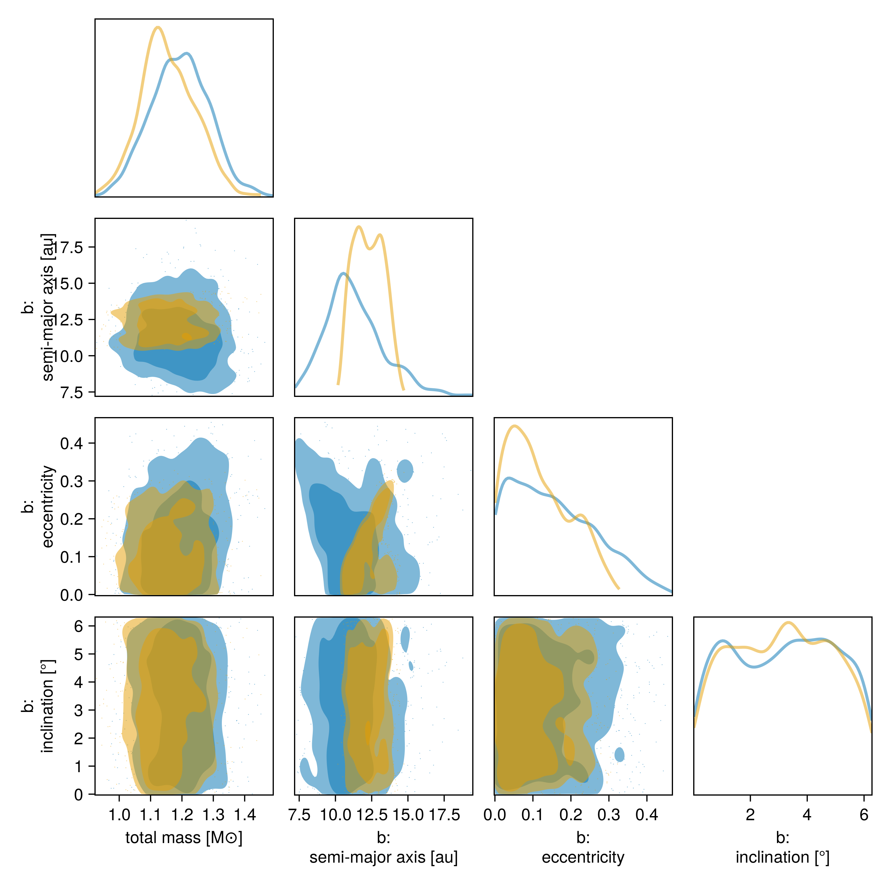

Observale-Based Priors
This tutorial shows how to fit an orbit to relative astrometry using the observable-based priors ofO'Neil et al. 2019. Please cite that paper if you use this functionality.
We will fit the same astrometry as in the previous tutorial, and just change our priors.
using Octofitter
using CairoMakie
using PairPlots
using Distributions
astrom_like = PlanetRelAstromLikelihood(
(epoch = 50000, ra = -505.7637580573554, dec = -66.92982418533026, σ_ra = 10, σ_dec = 10, cor=0),
(epoch = 50120, ra = -502.570356287689, dec = -37.47217527025044, σ_ra = 10, σ_dec = 10, cor=0),
(epoch = 50240, ra = -498.2089148883798, dec = -7.927548139010479, σ_ra = 10, σ_dec = 10, cor=0),
(epoch = 50360, ra = -492.67768482682357, dec = 21.63557115669823, σ_ra = 10, σ_dec = 10, cor=0),
(epoch = 50480, ra = -485.9770335870402, dec = 51.147204404903704, σ_ra = 10, σ_dec = 10, cor=0),
(epoch = 50600, ra = -478.1095526888573, dec = 80.53589069730698, σ_ra = 10, σ_dec = 10, cor=0),
(epoch = 50720, ra = -469.0801731788123, dec = 109.72870493064629, σ_ra = 10, σ_dec = 10, cor=0),
(epoch = 50840, ra = -458.89628893460525, dec = 138.65128697876773, σ_ra = 10, σ_dec = 10, cor=0),
)
@planet b Visual{KepOrbit} begin
e ~ Uniform(0.0, 0.5)
i ~ Sine()
ω ~ UniformCircular()
Ω ~ UniformCircular()
τ ~ UniformCircular(1.0)
# Results will be sensitive to the prior on period
P ~ LogUniform(0.1, 50)
a = ∛(system.M * b.P^2)
tp = b.τ*b.P*365.25 + 50420
end astrom_like ObsPriorAstromONeil2019(astrom_like)
@system TutoriaPrime begin
M ~ truncated(Normal(1.2, 0.1), lower=0)
plx ~ truncated(Normal(50.0, 0.02), lower=0)
end b
model = Octofitter.LogDensityModel(TutoriaPrime)LogDensityModel for System TutoriaPrime of dimension 11 with fields .ℓπcallback and .∇ℓπcallback
Now run the fit:
using Random
Random.seed!(0)
results_obspri = octofit(model)Chains MCMC chain (1000×29×1 Array{Float64, 3}):
Iterations = 1:1:1000
Number of chains = 1
Samples per chain = 1000
Wall duration = 9.57 seconds
Compute duration = 9.57 seconds
parameters = M, plx, b_e, b_i, b_ωy, b_ωx, b_Ωy, b_Ωx, b_τy, b_τx, b_P, b_ω, b_Ω, b_τ, b_a, b_tp
internals = n_steps, is_accept, acceptance_rate, hamiltonian_energy, hamiltonian_energy_error, max_hamiltonian_energy_error, tree_depth, numerical_error, step_size, nom_step_size, is_adapt, loglike, logpost, tree_depth, numerical_error
Summary Statistics
parameters mean std mcse ess_bulk ess_tail rha ⋯
Symbol Float64 Float64 Float64 Float64 Float64 Float6 ⋯
M 1.1557 0.0867 0.0048 322.5507 539.3699 1.008 ⋯
plx 50.0001 0.0195 0.0007 920.9786 550.3266 1.005 ⋯
b_e 0.1151 0.0815 0.0143 42.0037 140.9220 1.064 ⋯
b_i 0.6587 0.0845 0.0048 315.3617 490.7981 1.002 ⋯
b_ωy 0.7398 0.2867 0.0415 52.1482 140.1112 1.031 ⋯
b_ωx 0.5260 0.3101 0.0435 49.4746 62.0805 1.032 ⋯
b_Ωy -0.4664 0.3209 0.0569 34.8404 241.3921 1.074 ⋯
b_Ωx -0.7935 0.2261 0.0361 39.8129 220.7514 1.066 ⋯
b_τy 0.9657 0.0995 0.0209 72.5350 21.0802 1.008 ⋯
b_τx -0.0488 0.2391 0.0435 63.1313 20.3448 1.016 ⋯
b_P 40.2326 5.0092 0.2806 317.4436 384.5162 1.000 ⋯
b_ω 0.6260 0.4403 0.0643 46.7815 62.0805 1.034 ⋯
b_Ω -2.1062 0.4048 0.0707 32.4921 222.1868 1.077 ⋯
b_τ -0.0090 0.0425 0.0081 63.0446 20.3448 1.016 ⋯
b_a 12.2881 1.0143 0.0560 327.7461 384.5162 0.999 ⋯
b_tp 50286.8052 633.4416 120.5451 61.7807 21.2645 1.015 ⋯
2 columns omitted
Quantiles
parameters 2.5% 25.0% 50.0% 75.0% 97.5%
Symbol Float64 Float64 Float64 Float64 Float64
M 0.9923 1.0977 1.1457 1.2137 1.3347
plx 49.9607 49.9870 50.0004 50.0133 50.0395
b_e 0.0018 0.0474 0.0975 0.1720 0.2788
b_i 0.4798 0.6031 0.6624 0.7193 0.8068
b_ωy 0.0464 0.5963 0.8638 0.9591 1.0134
b_ωx -0.0515 0.2802 0.4951 0.8019 0.9990
b_Ωy -0.9614 -0.7816 -0.4402 -0.1880 0.0450
b_Ωx -1.0235 -0.9784 -0.8927 -0.6230 -0.2890
b_τy 0.5231 0.9686 0.9872 1.0063 1.0348
b_τx -0.8371 -0.1316 -0.0198 0.0808 0.3533
b_P 31.8518 35.9703 40.1333 44.2809 49.1357
b_ω -0.0516 0.2848 0.5200 0.9290 1.5237
b_Ω -2.8465 -2.4639 -2.0296 -1.7608 -1.5274
b_τ -0.1627 -0.0209 -0.0031 0.0128 0.0564
b_a 10.6006 11.4521 12.2690 13.1192 14.1104
b_tp 47948.7246 50126.7350 50374.3680 50600.0979 51302.0910
using Plots: Plots
plotchains(results_obspri, :b, kind=:astrometry, color="b_e")
Plots.plot!(astrom_like, label="astrometry")
Plots.xlims!(-1000,1000)
Plots.ylims!(-1000,1000)
Compare this with the previous fit using uniform priors:
plotchains(results, :b, kind=:astrometry, color="b_e")
Plots.plot!(astrom_like, label="astrometry")
Plots.xlims!(-1000,1000)
Plots.ylims!(-1000,1000)
We can compare the results in a corner plot:
octocorner(model,results,results_obspri,small=true)